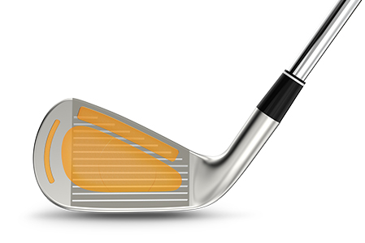
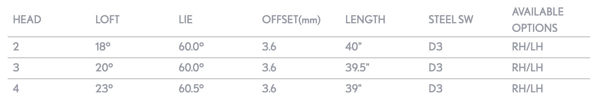

ZX Utility Irons
The new ZX Utility Irons are smaller, more compact, and more blade-like at address. Fully forged for exceptional feel at impact, even our tour players love the added forgiveness of the ZX Utility Irons. Packing added power into a smaller profile, adding these irons to your golf bag means a serious upgrade to your iron game, both when hitting iron off the tee or when going for the green. Keep reading or watch our video to find out more.
TECHNOLOGY
MAIN FRAME
Showcasing a one-of-a-kind design developed by human intelligence blended with artificial intelligence, these irons have been meticulously tested to produce our fastest irons yet. The variable thickness pattern made up of grooves maximums COR. So, it’s time to take advantage of the power, forgiveness and total control offered by this club.
HOLLOW DESIGN
Added forgiveness from fully hollow construction makes it easier to pure utility irons, adding distance, control, and a high launch off the tee or from the fairway. Srixon tour players love the added forgiveness provided by this hollow design.
MULTI-PIECE CONSTRUCTION
Made using high-quality tungsten, the centre of gravity is lowered providing a higher launch. A forged SUP10 face enhances speed and distance, while a forged 1020 Carbon Steel body absorbs vibrations for an extremely soft feel.
ZX Utility Irons Specs
SRIXON Utility Z X Graphite PRICE
239 € / 259 CHF / 2 499 SEK / 209 £
SRIXON Utility Z X Steel PRICE
229 € / 249 CHF / 2 399 SEK / 199 £